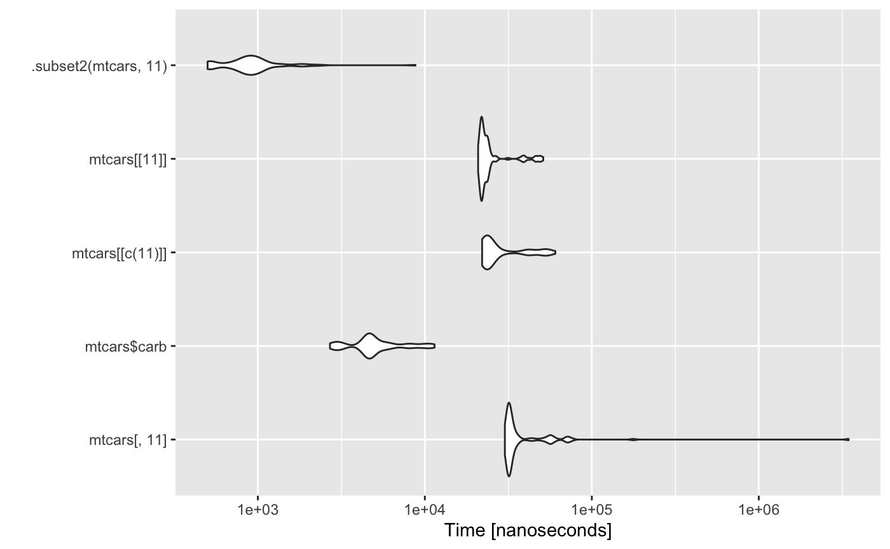
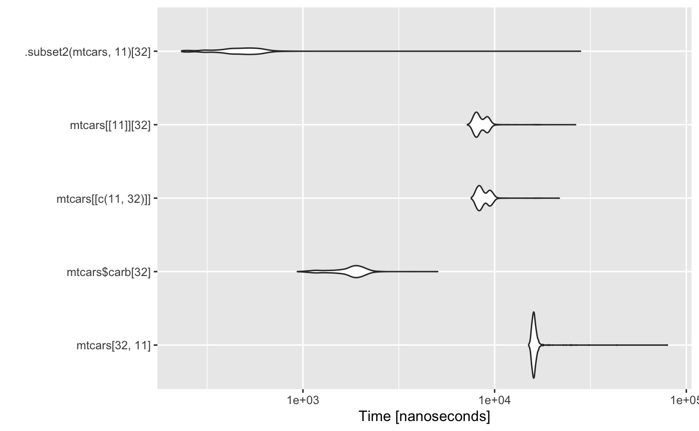

When several conditionals present the same boolean condition, merging their inside actions would avoid computing the condition several times. Also, in the cases where a second if statement has been used with the exact negation of the condition of the first if, the second if could then be incorporated in an else statement.
cond_thread <- function(n) { evens <- 0 evens_sum <- 0 odds <- 0 for (i in seq_len(n)) { if (i %% 2 == 0) { # same logical as next if condition (can be merged) evens <- evens + 1 } if (i %% 2 == 0) { evens_sum <- evens_sum + i } if (!(i %% 2 == 0)) { # exact negation as previous if (can be an else) odds <- odds + 1 } } }
cond_thread_opt <- function(n) { evens <- 0 evens_sum <- 0 odds <- 0 for (i in seq_len(n)) { if (i %% 2 == 0) { # merged evens <- evens + 1 evens_sum <- evens_sum + i } else { # converted to else odds <- odds + 1 } } }
Replacing a function call with the body of the called function is called “inline expansion”. This eliminates the function calling overhead and also the overhead of return call from a function. It also saves the overhead of variables push/pop on the stack while function calling.
cubed <- function(x) { x * x * x } inline <- function(n) { to_cubes <- 0 for (i in seq_len(n)) { to_cubes <- to_cubes + cubed(i) } }
inline_opt <- function(n) { to_cubes <- 0 for (i in seq_len(n)) { to_cubes <- to_cubes + (i * i * i) # function inlined } }
As a general rule of thumb, in any programming language, we should undertake memory management as much as possible. When we grow a vector inside a loop, the vector asks the processor for extra space in between the running program and then proceeds, once it gets the required memory. This process is repeated for every iteration of the loop. Thus we should pre-allocate the required memory to a vector to avoid such delays.
mem_alloc <- function(n) { vec <- NULL for (i in seq_len(n)) { vec[i] <- i } }
A golden rule in R programming is to access the underlying C/Fortran routines as much as possible; the fewer R function calls required to achieve this, the better. Many R functions are therefore vectorized, that is, the function’s inputs and/or outputs naturally work with vectors, reducing the number of function calls required.
The idea would be to replace the different one-column extraction alternatives by the much faster .subset2 call alternative.
autoplot(microbenchmark( mtcars[, 11], mtcars$carb, mtcars[[c(11)]], mtcars[[11]], .subset2(mtcars, 11) ))

For some R classes, the [[ ]] operator and .subset work differently. For instance, they seem to be equivalent for data.frame but are not the same for matrix class.
Moreover, both [[ ]] and .subset2 are functions and in R, any function can be overwritten. Thus the above optimization can be made to fail just by redefining, say, the the .subset2 function.
The idea would be to replace the different one-value extraction alternatives by the much faster .subset2 call alternative.
autoplot(microbenchmark( mtcars[32, 11], mtcars$carb[32], mtcars[[c(11, 32)]], mtcars[[11]][32], .subset2(mtcars, 11)[32], times = 1000L ))

For some R classes, the [[ ]] operator and .subset work differently. For instance, they seem to be equivalent for data.frame but are not the same for matrix class.
Moreover, both [[ ]] and .subset2 are functions and in R, any function can be overwritten. Thus the above optimization can be made to fail just by redefining, say, the .subset2 function.